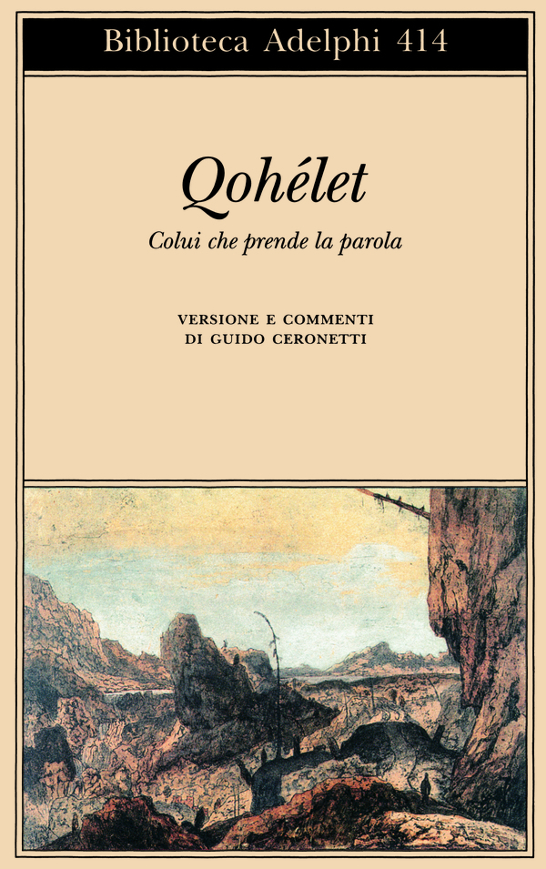

9:25 · 2 OPERE
Il Pensiero Profligato.
Il filo del discorso
Il pensiero profligato è presentato come la condizione in cui il giudizio autonomo viene espulso dalla vita pubblica e sostituito da conformismo, consumo e obbedienza. Caldarella collega questa perdita alla subordinazione della politica all’economia e alla difficoltà di riconoscere contenuti culturali capaci di liberare il pensiero. I richiami al Qoèlet e alla Gaia scienza conducono alla figura di un individuo disorientato, privato di relazioni e di senso.
I libri nel discorso

Qoèlet (Ecclesiaste)
Copertina: Adelphi, Biblioteca Adelphi 414, 2001
Edizione autonoma del libro biblico, versione e commenti di Guido Ceronetti. Non è una copertina della Bibbia integrale né un’edizione confermata nel video.
L’Ecclesiaste è nominato prima della citazione di servi a cavallo e principi a piedi.
Passaggio 6:23 ↗ · Fonti e libro ↗
La gaia scienza
Copertina: Adelphi · La gaia scienza e Idilli di Messina
Copertina autentica controllata visivamente. Edizione di riferimento, non identificata come quella usata nel video.
Il finale cita Nietzsche e nomina La gaia scienza.
Passaggio 8:31 ↗ · Fonti e libro ↗Minutaggi ricavati da testi automatici, da riascoltare. Le identificazioni probabili sono segnalate accanto ai libri.